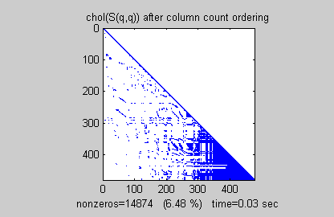

- Table of Contents
- Playshow
- intro
- PageNumber: 1
- PageNumber: 2
- PageNumber: 3
- PageNumber: 4
- PageNumber: 5
- PageNumber: 6
- PageNumber: 7
- PageNumber: 8
- PageNumber: 9
- PageNumber: 10
- PageNumber: 11
- PageNumber: 12
- PageNumber: 13
- PageNumber: 14
- PageNumber: 15
- PageNumber: 16
- PageNumber: 17
- PageNumber: 18
- PageNumber: 19
- PageNumber: 20
- PageNumber: 21
- PageNumber: 22
- PageNumber: 23
- PageNumber: 24
- PageNumber: 25
- buckydem
- inverter
- e2pi
- sparsity
- matmanip
- fitdemo
Playshow
The PLAYSHOW command creates a slide show which steps the user through a series of commands and displays them to the screen. This report contains each page of output from the following slide shows:
intro
buckydem
inverter
e2pi
sparsity
matmanip
fitdemo
intro
PageNumber: 1
Welcome to MATLAB. This demonstration (and the
entire demo system) is written in MATLAB's fourth
generation language.
Here are the MATLAB commands used to produce the picture
shown above.
>> load logo
>> surf(L,R), colormap(M), n = length(L(:,1));
>> axis off, axis([1 n 1 n -.2 .8]), view(-37.5,30)
>> title('MATLAB. The Language of Techical Computing.');
PageNumber: 2
First, let's create a simple vector with 9 elements called 'a'.
(During most of this demo, we will display the MATLAB
commands typed at the command line prompt ">>" and the
corresponding output in the figure window shown above.)
PageNumber: 3
Now let's add 2 to each element of our vector, 'a', and store
the result in a new vector.
Notice how MATLAB requires no special handling of vector
or matrix math.
PageNumber: 4
Creating graphs in MATLAB is as easy as one command.
Let's plot the result of our vector addition with grid lines.
>> plot(b)
>> grid on
PageNumber: 5
MATLAB can make other graph types as well, with axis labels.
>>bar(b)
>>xlabel('Sample #')
>>ylabel('Pounds')
PageNumber: 6
MATLAB can use symbols in plots as well. Here is an
example using *'s to mark the points. MATLAB offers a
variety of other symbols and line types.
>> plot(b,'*')
>> axis([0 10 0 10])
PageNumber: 7
One area in which MATLAB excels is matrix computation.
Creating a matrix is as easy as making a vector, using
semicolons (;) to separate the rows of a matrix.
PageNumber: 9
Now let's multiply these two matrices together.
Note again that MATLAB doesn't require you to deal with
matrices as a collection of numbers. MATLAB knows when
you are dealing with matrices and adjusts your calculations
accordingly.
PageNumber: 10
Instead of doing a matrix multiply, we can multiply the
corresponding elements of two matrices or vectors
using the .* operator.
PageNumber: 12
... and then illustrate the fact that a matrix times its inverse is
the identity matrix.
PageNumber: 13
MATLAB has functions for nearly every type of common
matrix calculation.
There are functions to obtain eigenvalues ...
PageNumber: 15
The "poly" function generates a vector containing the
coefficients of the characteristic polynomial.
The characteristic polynomial of a matrix A is
det(lambda*I - A)
PageNumber: 16
We can easily find the roots of a polynomial using the
"roots" function.
These are actually the eigenvalues of the original matrix.
PageNumber: 17
MATLAB has many applications beyond just matrix
computation.
To convolve two vectors ...
PageNumber: 19
At any time, we can get a listing of the variables we have
stored in memory using the "who" or "whos" command.
PageNumber: 21
You can have more than one statement on a single line by
separating each statement with commas or semicolons.
If you don't assign a variable to store the result of an operation,
the result is stored in a temporary variable called "ans".
PageNumber: 22

In this case, since we separated the statements with commas,
the result of each operation was echoed to the screen.
As you can see, MATLAB easily deals with complex and
infinite numbers in calculations.
PageNumber: 23
MATLAB has functions which make it ideal as a signal
processing tool.
For more details, see the demos of the Signal
Processing Toolbox
>> A = zeros(32); A(14:16,14:16) = ones(3);
>> y = fft2(A);
>> mesh(abs(y));
>> title('Magnitude of Two-Dimensional FFT of a Matrix')
PageNumber: 24
MATLAB also allows you to create and analyze functions
easily.
For examples, see the demo "Functions of functions" under
MATLAB Numerics.
>> fplot(@humps,[0,2]), hold on
>> patch([0.5 0.5:0.02:1 1 0.5],[0 humps(0.5:0.02:1) 0 0],'r');
>> hold off
>> title('A region under an interesting function.')
PageNumber: 25
Thank you for viewing this introduction to MATLAB.
>> membrane(5,15,9,9)
>> axis([-1 1 -1 1 -1 .5])
>> colormap(hot)
buckydem
PageNumber: 1
[13x71 char]
PageNumber: 2
A graph can be represented by its adjacency matrix.
To construct the adjacency matrix, the nodes are numbered
1 to N. Then element (i,j) of the matrix is set to 1 if node i is
connected to node j, and 0 otherwise.
PageNumber: 3
Here are the nodes in one hemisphere of the bucky ball, numbered
polygon by polygon.
>> gplot(B(1:30,1:30),[x(1:30) y(1:30)],'b-')
>> for j = 1:30, text(x(j),y(j),int2str(j)); end
PageNumber: 4
To visualize the adjacency matrix of this hemisphere, we use the SPY
function to plot the silhouette of the nonzero elements.
>> spy(B(1:30,1:30)), title('spy(B(1:30,1:30))')
Note that the matrix is symmetric, since if node i is connected to node j,
then node j is connected to node i.
PageNumber: 5
Now we extend our numbering scheme to the whole graph
by reflecting the numbering of one hemisphere into the other.
>> [B,V] = bucky;
>> H = sparse(60,60);
>> gplot(B-H,V,'b-');
>> hold on
>> gplot(H,V,'r-')
>> for j = 31:60, text(x(j),y(j),int2str(j)); end

PageNumber: 7
In many useful graphs, each node is connected to only a few other
nodes. As a result, the adjacency matrices contain
just a few nonzero entries per row.
This demo has shown one place where SPARSE matrices come in handy.
inverter
PageNumber: 1

Press the "Start" button to see a demonstration of the
inversion of large matrices in MATLAB.
PageNumber: 2

This is a graphic representation of a random matrix
The RAND command creates the matrix, and the
IMAGESC command plots an image of the matrix,
automatically scaling the color map appropriately.
>> n = 100;
>> a = rand(n);
>> imagesc(a);
>> colormap(hot);
>> axis square
PageNumber: 3
This is a representation of the inverse of that matrix. While the
numbers in the previous matrix were completely random, the
elements in this matrix are anything BUT random. In fact,
each element in this matrix ("b") depends on every one of the
ten thousand elements in the previous matrix ("a").
>> b = inv(a);
>> imagesc(b);
>> axis square;
PageNumber: 4
But how do we know for sure if this is really the correct inverse
for the original matrix? Multiply the two together and see if the
result is correct, because just as 3*(1/3) = 1, so must
a*inv(a) = I, the identity matrix.
The identity matrix (almost always designated by I) is like an
enormous number one. It is completely made up of zeros,
except for ones running along the main diagonal.
PageNumber: 5
This is the product of the matrix with its inverse: sure
enough, it has the distinctive look of the identity matrix,
with a band of ones streaming down the main diagonal,
surrounded by a sea of zeros.
>> imagesc(a*b);
>> axis square;
e2pi
PageNumber: 1
Press the "Start" button to see an example of visualization
in MATLAB applied to the question:
"Which is greater, e^pi or pi^e?"
PageNumber: 2
The question is: which is greater, e^pi or pi^e? The easy way
to find out is to type it directly at the MATLAB command
prompt. But it motivates a more interesting question. What
is the shape of the function z=x^y-y^x? Here is a plot of z.
>> x=0:0.16:5; y=0:0.16:5;
>> [xx,yy]=meshgrid(x,y); zz=xx.^yy-yy.^xx;
>> h=surf(x,y,zz);
>> set(h,'EdgeColor',[0.7 0.7 0.7]);
>> view(20,50); colormap(hsv);
>> title('z=x^y-y^x'); xlabel('x'); ylabel('y');
PageNumber: 4
Here is a plot of the integer solutions to the equation
x^y-y^x=0. Notice 2^4=4^2 is the ONLY integer solution
where x~=y. And what is the intersection point of the two
curves that define where x^y=y^x?
>> h=plot([0:5 2 4],[0:5 4 2],'r.', ...
'MarkerSize',25,'EraseMode','none');
PageNumber: 5
Finally, we can see that e^pi is indeed larger than pi^e
(though not by much) by plotting these points on our surface.
>> e=exp(1);
>> e^pi
ans =
23.1407
>> pi^e
ans =
22.4592
sparsity
PageNumber: 1
Press the "Start" button to see a demonstration which
shows that reordering the rows and columns of a
sparse matrix S can affect the time and storage required
for a matrix operation such as factoring S into its
Cholesky decomposition, S=L*L'.
>> spy(S), title('A Sparse Symmetric Matrix')
>> nz = nnz(S);
>> lblstr = sprintf('nonzeros=%d (%.3f %%)',nz,nz*pct);
>> set(get(gca,'XLabel'),'String',lblstr);
PageNumber: 2
A SPY plot shows the nonzero elements in a matrix.
This spy plot shows a SPARSE symmetric positive definite
matrix derived from a portion of the Harwell-Boeing test matrix
"west0479", a matrix describing connections in a model
of a diffraction column in a chemical plant.
>> title('spy(S)')
PageNumber: 3
Now we compute the Cholesky factor L, where S=L*L'.
Notice that L contains MANY more nonzero elements than
the unfactored S, because the computation of the Cholesky
factorization creates "fill-in" nonzeros. This slows down the
algorithm and increases storage cost.
>> tic, L = chol(S)'; t(1) = toc;
>> spy(L), title('Cholesky decomposition of S')
PageNumber: 4
By reordering the rows and columns of a matrix, it may be
possible to reduce the amount of fill-in created by
factorization, thereby reducing time and storage cost.
We will now try three different orderings supported by
MATLAB.
PageNumber: 5
The SYMRCM command uses the reverse Cuthill-McKee
reordering algorithm to move all nonzero elements closer to
the diagonal, reducing the "bandwidth" of the original matrix.
>> p = symrcm(S);
>> spy(S(p,p)), title('S(p,p) after Cuthill-McKee ordering')
PageNumber: 6

The fill-in produced by Cholesky factorization is confined to
the band, so that factorization of the reordered matrix takes
less time and less storage.
>> tic, L = chol(S(p,p))'; t(2) = toc;
>> spy(L), title('chol(S(p,p)) after Cuthill-McKee ordering')
PageNumber: 7
The COLPERM command uses the column count reordering
algorithm to move rows and columns with higher nonzero
count towards the end of the matrix.
>> q = colperm(S);
>> spy(S(q,q)), title('S(q,q) after column count ordering')
PageNumber: 8

For this example, the column count ordering happens to
reduce the time and storage for Cholesky factorization, but
this behavior cannot be expected in general.
>> tic, L = chol(S(q,q))'; t(3) = toc;
>> spy(L), title('chol(S(q,q)) after column count ordering')
PageNumber: 9
The SYMMMD command uses the minimimum degree
algorithm (a powerful graph-theoretic technique) to produce
large blocks of zeros in the matrix.
>> r = symmmd(S);
>> spy(S(r,r)), title('S(r,r) after minimum degree ordering')
PageNumber: 10
The blocks of zeros produced by the minimum degree
algorithm are preserved during the Cholesky factorization.
This can significantly reduce time and storage costs.
>> tic, L = chol(S(r,r))'; t(4) = toc;
>> spy(L), title('chol(S(r,r)) after minimum degree ordering')
PageNumber: 11
RESULTS SUMMARY
original: nonzero=13.23% time=0.44 sec
Cuthill-McKee: nonzero=10.56% time=0.33 sec
column count: nonzero=6.48% time=0.22 sec
min degree: nonzero=4.01% time=0.11 sec
>> bar(nc*pct), title('Nonzeros after Cholesky factorization')
>> ylabel('Percent');
matmanip
PageNumber: 1
Press the "Start" button to see some basic matrix manipulations
in MATLAB.
We start by creating a magic square and assigning it to the variable A.
>> A = magic(3);
PageNumber: 2
Here's how to add 2 to each element of A.
>> A+2;
Note that MATLAB requires no special handling of matrix math.
PageNumber: 3
The apostrophe symbol denotes the complex conjugate
transpose of a matrix.
Here's how to take the transpose of A.
>> A' ;
PageNumber: 4
The symbol * denotes multiplication of matrices.
Let's create a new matrix B and multiply A by B.
>> B = 2*ones(3);
>> A*B;
PageNumber: 5
We can also multiply each element of A with its
corresponding element of B by using the .* operator.
>> A.*B;
PageNumber: 6
MATLAB has functions for nearly every type of common
matrix calculation. For example, we can find the eigenvalues
of A using the "eig" command.
>> eig(A);
fitdemo
PageNumber: 1
Press the "Start" button to see a demonstration of the
optimal fitting of a nonlinear function to a set of data.
PageNumber: 2

This example demonstrates fitting a nonlinear function
to a set of data. We''ll use a function called FMINSEARCH
that implements the Nelder-Mead simplex (direct search) algorithm
for minimizing a nonlinear function of several variables.
PageNumber: 3
>> Data = ...
[ 0.0000 5.8955
...
2.0000 0.2636];
>> t = Data(:,1);
>> y = Data(:,2);
>> plot(t,y,'ro')
PageNumber: 4

We would like to fit the following function with 2 linear
parameters and 2 nonlinear parameters to the data:
y = c(1)*exp(-lam(1)*t) + c(2)*exp(-lam(2)*t)
PageNumber: 5
To fit this function to the data, we write a function "fitfun"
that returns the error in the fit given the nonlinear parameter
"lam" and the data. We can then guess for initial estimates of
the nonlinear parameters, and invoke FMINSEARCH.
>> plot(t,y,'EraseMode','xor')
PageNumber: 6
And the optimal curve fit occurs automatically with the use
of the FMINSEARCH command.
>> lam = [1 0]';
>> options = optimset('Display','off','TolX',0.1);
>> lambda = fminsearch('fitfun',lam,options);